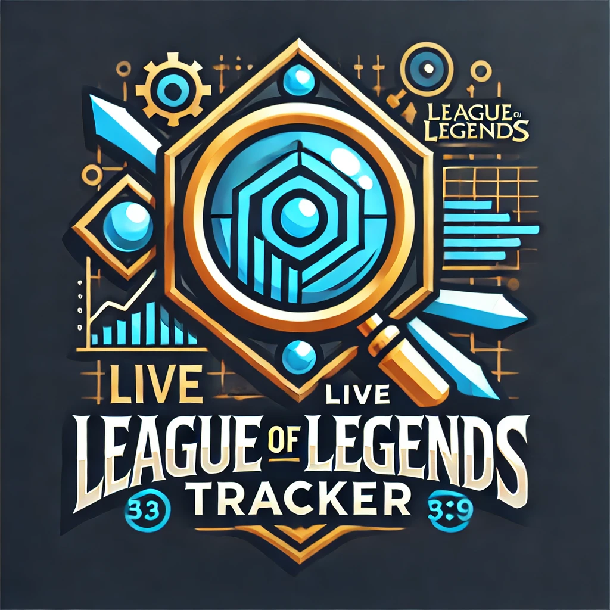

About Me
I am a software developer with a passion for building web applications. I have experience working with various technologies including HTML, CSS, JavaScript, and React. I enjoy solving complex problems and continuously learning new skills to improve my craft. In my spare time, I like to contribute to open-source projects and explore new programming languages.
Projects
Live-LOL-Tracker
The Live League of Legends Tracker is a cutting-edge web application designed to provide real-time insights and statistics for League of Legends players. Leveraging the Riot Games API, this tool delivers up-to-date information on player performance, live match data, and comprehensive game analytics, all presented in an intuitive and user-friendly interface.
Find-My-Brewey
Welcome to Find My Brewery, your go-to platform for discovering breweries near you! Whether you're a craft beer enthusiast or simply looking for a new spot to unwind, Find My Brewery makes it easy to find breweries in any state.

Potty_Partner
Potty Partner is a web application designed to help users find bathrooms and leave reviews. Whether you’re traveling, in a new city, or just out and about, Potty Partner makes it easy to locate nearby restrooms and read user reviews to find the cleanest, most accessible options. This app aims to provide a community-driven resource for bathroom locations and conditions, ensuring that everyone has access to clean and safe facilities when they need them most.